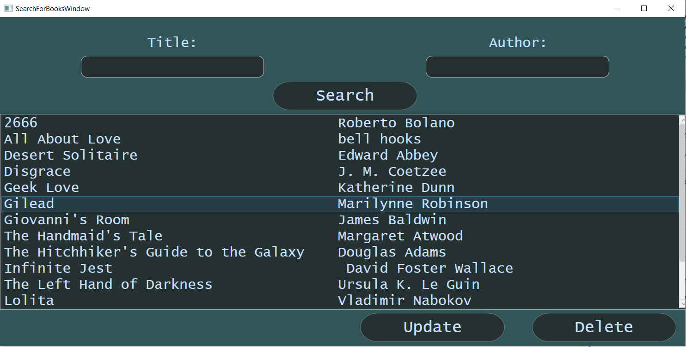
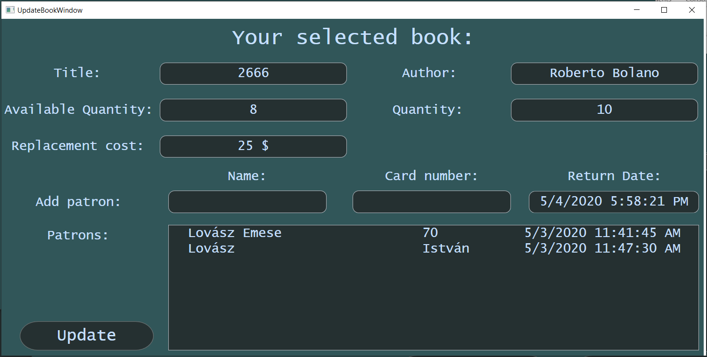

Ha a "Search for books" gombra kattintott akkor a következő ablakot fogja látni:
Ebben az ablakba ön keresni tud a könyvek között, cím és szerző alapján. Nem fontos pontosan beírni a címet vagy a szerző nevét elég ha egy kis részletet begépelnek belőle, viszont az ékezetekre figyelni kell.
Search gomb
Erre a gomra kattintva a "Title" és az "Author" mezőkbe begépelt címek és/vagy szerzők alapján a program kilistázza a kritériumoknak megfelelő könyveket (természetesen ha szerepelnek a nyilvántartásban). A listázás után rá lehet kattintani a kívánt könyvre. Ha rákattintottunk akkor kiválasztottuk a többi közül és további műveleteket tudunk rajta végezni.
Update gomb
Az "Update" gombra kattintva a következő ablak ugrik fel:
A könyv különböz adatait láthatjuk a képernyőn ezeket szabadon átírhatjuk ha ez éppen indokolt (figyelni kell az adatok helyes bevitelére).
Ezen kívül képesek vagyunk embereket hozzárendelni a könyvekhez. Erre akkor van szükség ha valaki ki akarja bérelni.
NAGYON FONTOS!!, hogy
a kliens nevét pontosan írjuk be a rendszerbe és a kártyaszámát is(pl.: ne legyenek benne extra szóközök). A dátum magától kitöltődik az aznapi
naptól számítva 20 napra.
Továbbá itt tudjuk megtekinteni azon személyek listáját akik ezt a könyvet bérlik éppen.
Majd az "Update" gomra kattintva ezeket a változásokat menteni tudjuk.
Delete gomb
Ezt a gombot használva törölni tudjuk a nyilvántartásban szereplő köbyvet.